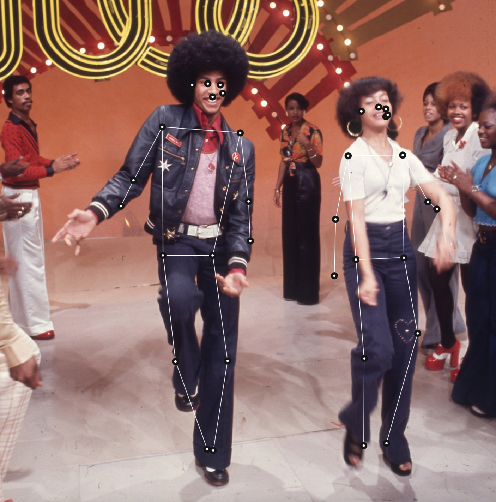
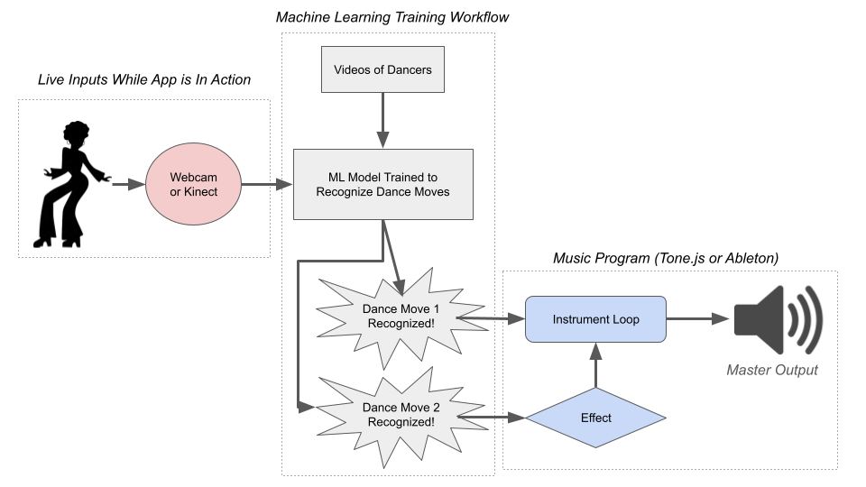

Soul Train Machine

Concept
Soul Train Machine is a body tracking app where the users control music through their dance. The app pays homage to the long-running Black American tv show,
How it works
Using a webcam and an AI model trained on common dance moves, different poses trigger different instruments and musical flourishes through the Tone.js library.

Context
Presented as a proposal for an online installation. The full deck can be viewed here.
Credits
Created by Mary Notari
Special thanks to Lisa Jamhoury